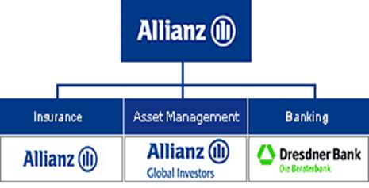

The purpose of this guide is to give the coder a little overview on various aspects concerning the coding of Allianz. This guide gives a deeper insight in the diverse fields of business Allianz is engaged in, as well as some short explanations of some special themes of interest. It will also provide the coder with a wide range of tips and tricks, and thus give him a variety of tools he can use for his daily work.
This guide can be very helpful while learning the coding of Allianz, as it can support the coder with some additional information and in this way give him a better insight in the huge Allianz universe.
For the more experienced coder, it serves as a work of reference which he can consult in case of uncertainty.
This guide is based on the International Codebook of Media Tenor, hence the descriptions of thematic aspects, fields of business and products are in English.
(Note: The term "coder" in combination with the usage of "he" is due to reasons of convenience. It is in no case intended to discriminate our female colleagues, it just makes writing a bit easier.)
"Allianz is one of the leading insurers and financial services providers worldwide.
Founded in 1890 and with 116 years of experience in the financial services industry, the Allianz Group is committed to providing financial security to a broad base of customers ranging from private individuals to large multinational corporations"
(from their website)
Allianz is active in a wide range of businesses, as there are:
· Property & Casualty insurance
· Life & Health insurance
· Banking
· Asset Management
· Assistance
· … and some more
They serve the needs of private clients as well as those of business clients, and offer a huge range of products and solutions for a variety of requirements.

Being an international company, Allianz has a lot of affiliates and subsidiaries all around the world. It would go far beyond the scope of this guide to mention them all, so here are some major aspects concerning the coding of subjects:
· It is important to code exactly the company/subsidiary which is mentioned in a certain phrase. In some articles, the focus can shift from the general company (holding) to another one, so always keep an eye on the changing of subjects.
· In general, code the company using the code "1". If in an article the new structure of "Allianz SE" ("74") is mentioned by name, and after that the author of the article describes aspects relating to this new company using the more general term "Allianz", do not change back to code "1", but keep coding using code "74"
· Try to derive from the formulation if the author is using an explicit name of a company, or if he is talking about a business unit. In particular, if you have to code an article dealing with business results in the diverse business units, it can happen that the author describes the businesses as part of the holding, and not by its organizational name.
· Examples:
|
Phrase: |
Coding: |
|
"Allianz raised the revenue in its life business by 5 % over the last year" |
Subject: 1 ("Holding, Allianz Group") Attribute: 20 ("Life-insurance, general") |
|
"Allianz Leben raised the revenue in its life business by 5 % over the last year" |
Subject: 2 ("Lebensversicherung AG (Allianz)" Attribute: 20 ("Life-insurance, general") |
|
"Allianz changes its general insurance strategy in Switzerland" |
Subject: 1 ("Holding, Allianz Group") Attribute: 1 ("Insurance in general") |
|
"Allianz Suisse changes its business strategy" |
Subject: 285 ("Allianz Suisse) Attribute: 0 ("general") |
|
"Gary Bhojwani, responsible for the Life business of Allianz in the USA, said …" |
Subject: 1 ("Holding, Allianz Group")* Attribute: 20 ("Life-insurance, general") |
|
"The CEO of Allianz Life, Gary Bhojwani, said …" |
Subject: 45 ("Allianz Life Insurance, USA")* Attribute: depends on what he is talking about |
*: remember to double-code officials (in this case: "Bhojwani, Gary" (Code: 3954)
2.1.2. Attributes (Business Units):
Allianz is, as already mentioned, doing business in a vast array of activities. For this reason it is important that the coder specifies the field of business the coded phrase refers to.
Ø Is it concerning the general business of the coded subject, or is a reference to a special unit contained ?
The researcher, who will be working with the data you code, must know to which category the coded issue refers, so that he can make precise reports about special fields of interest.
Following is an overview dealing with the more important fields of business, and what activities are related to those. In the appendix you will find a more detailed list.
|
Attribute: (business unit) |
Description and Examples: |
|
0: general |
Company in general (share prices, market cap etc.) |
|
1: Insurance in general |
Insurance business in general ("Allianz, Europe's biggest insurance company, ….") |
|
10: Property/Casualty Insurance (general) |
P/C insurance: ("Allianz last year doubled its total premium in P/C from … to …" |
|
20: Life-insurance, general |
Life insurance (unit): "The total turnover of Allianz' life business was 10 million Euro" |
|
21: Life-insurance |
Life insurance (business): "Last year Allianz sold 500000 life insurance policies." |
|
40: Capital investment, general |
Business unit, not used very often: "Allianz results relating to Capital investment: …" |
|
41: Asset-Management /investment for third parties |
Business unit, used often: Asset Management, Funds; major field of business for Allianz Global Investors (AGI, Pimco, RCM etc.) |
|
50: Assistance, general (for example legal-protection) |
Assistance solutions in general; major field of business for Mondial Assistance |
|
60: Reinsurance |
Small business unit. Allianz has some subsidiaries dealing with reassurance, but it is just a small part of its overall business. Note: Do not use this field of business for coding information on how Allianz reassures itself against claims. These aspects are coded under the most appropriate field of insurance ! |
|
70: Banking in general |
Banking (in general): "Dresdner Bank, the banking subsidiary of Allianz, …" or "Overall banking results in Q1 amounted to 2 billion Dollars." |
|
71: Corporates & Markets |
Former business unit of Dresdner Bank. |
|
72: Commercial Banking (Dresdner Bank) |
Former business unit of Dresdner Bank, nowadays coded for the division Financial Institutions |
|
73: Investment Banking (Dresdner Bank) |
One of the two major business units of Dresdner Bank; major field of business for Dresdner Kleinwort |
|
75: Private and Business Clients (Dresdner Bank) |
The other major business unit of Dresdner Bank, nowadays called Private and Corporate Clients |
|
76: Private Clients (Dresdner Bank) |
Part of Private and Corporate Clients, activities concerning private clients (Current account, Checking account, EC-Card (private) etc.) |
|
77: Business Clients (Dresdner Bank) |
Part of Private and Corporate Clients, activities concerning corporate clients (Business account, Dresdner Cash Management etc.) |
|
78: Capital Markets |
Major part of Investment Banking, activities concerning trade of different kinds of securities (Equity trading, Bond trading, Derivatives trading, Currency trading etc.) |
|
80: Corporate Broking |
Use this when mentioned |
|
81: Real estate financing (private) |
Real Estate |
|
85: Capital Markets Research |
All statements concerning research in capital markets in general (bond, equity, currency, commodity markets), as well as statements about economies or central banks |
|
86: Equity Research |
Analyst statements/ratings concerning certain shares, bonds etc. (Rating of other companies, Equity Research / Recommendations), and statements relating to single companies/branches ("BMW has changed its business policy," a Dresdner Kleinwort analyst said.) |
|
87: Corporate Finance |
Major part of Investment Banking, activities concerning financial services for companies and governments (IPO or Follow-Up Emissions, Bond Emissions in general, Merger & Acquisitions-Advice, Bookrunning, Corporate Finance Advisory, Syndicated Loan etc.) |
|
88: Global Finance |
Use this when mentioned |
2.2.1. Members of the Board of Management:
The Board of Management of Allianz SE currently is composed of eleven members (Stand: June 2007):
|
Name |
Position |
Code |
|
Diekmann, Michael |
Chairman of the Board of Management |
3314 |
|
Achleitner, Dr. Paul |
Finance |
3313 |
|
Booth, Clement |
Insurance Anglo Broker Markets, Global Lines |
3322 |
|
Carendi, Jan R. |
Insurance NAFTA Markets |
3320 |
|
Cucchiani, Enrico |
Insurance Europe 1 |
3909 |
|
Faber, Dr. Joachim |
Asset Management Worldwide |
3379 |
|
Perlet, Dr. Helmut |
Controlling, Reporting, Risk |
3312 |
|
Rupprecht, Dr. Gerhard |
Insurance Germany |
3306 |
|
Thierry, Jean-Philippe |
Insurance Europe 2 |
3806 |
|
Walter, Dr. Herbert |
Banking Worldwide |
3319 |
|
Zedelius, Dr. Werner |
Insurance Growth Markets |
3318 |
2.2.2. Other important executives:
Below you can find a selection of some of the more important executives of Allianz' companies:
|
Name |
Position |
Code |
|
Dürkopp, Klaus |
Mondial Assistance |
3919 |
|
Eich, Horst |
Joint CEO Allianz Global Investors Deutschland |
3882 |
|
Gross, William H. "Bill" |
CIO Pimco, "bond guru" |
3843 |
|
Jentzsch, Stefan |
CEO Dresdner Kleinwort |
843 |
|
Knof, Dr. Manfred |
CEO Allianz Suisse |
3957 |
|
Littich, Dr. Wolfram |
CEO Allianz Elementar (Austria) |
3801 |
|
Pütter, Thomas |
CEO Allianz Capital Partners |
3389 |
|
Rieß, Markus |
CEO AGI Deutschland |
3840 |
|
Theis, Axel |
CEO Allianz Global Corporate & Specialty AG |
3380 |
|
Thompson, William S. |
CEO Pimco |
3361 |
|
Utermann, Andreas |
CIO Allianz Global Investors, CIO RCM |
3836 |
|
Vita, Giuseppe |
Chairman RAS |
3901 |
|
Wiesemann, Thomas |
Joint CEO Allianz Global Investors Deutschland |
3390 |
|
Zesbaugh, Mark A. |
CEO Allianz Life (USA) |
3809 |
|
Zimmerer, Maximilian |
CEO Allianz Leben |
3351 |
There are a lot of other executives in our list, and it is important that if someone of those is mentioned in an article, he has to be coded!
3. Allianz – Themes of special interest
In this chapter of the guide you will learn about some major issues concerning the business strategy of Allianz, and some of its subsidiaries. It will provide an insight in some themes of special interest, as well as some common products offered by the various entities.
You will only find issues and codes who describe explicitly Allianz-related concerns.
For a complete list of codes consult the Allianz codebook.
|
Thematic Aspect |
Description |
Code |
|
Investment/assets or money under management |
A: own investments by Allianz (in numbers), or B: money invested in Allianz products (e.g. funds) |
153 |
|
Loss Ration, Combined Ratio |
A measure of profitability used by an insurance company to indicate how well it is performing in its daily operations. A ratio below 100% indicates that the company is making underwriting profit while a ratio above 100% means that it is paying out more money in claims that it is receiving from premiums. |
162 |
|
Damage cost |
Expenditure arising from claims |
169 |
|
Bonds, Convertible Bonds |
Financing instrument, use this code when Allianz issues a (convertible) bond |
170 |
|
Financial Investment Earnings |
Earnings from financial investments, like dividends or interest profits |
171 |
|
Risk provisions |
Provisions for credit defaults or unexpectedly high damage claims |
172 |
|
Interest Earnings |
Earnings resulting from interests (credit earnings) |
173 |
|
Commission Earnings |
income from commission and service fee activities |
174 |
|
Global Financial Results |
Entirety of all financial results |
175 |
|
Balance-sheet total |
The complete balance sheet, consisting of activa and passiva. Measure of profitability for banks. |
176 |
|
Trading performance/Earnings |
Earnings coming from trading with financial instrument, e.g. derivatives |
177 |
|
Finance: Stress-Test |
Coming from the german financial authority BaFin, these tests check the solvency of life insurers under certain conditions |
182 |
|
Versicherungssumme |
Total insurance sum: "Allianz' insurance sum of all its diverse branches amounts to a total of 4bn Euro." |
185 |
Hier noch mehr aufnehmen ? Oder eher in den Anhang ?
The Allianz-codebook contains just a few special management issues:
|
Thematic Aspect |
Description |
Code |
|
Regional Management |
Regional management structure |
220 |
|
Remuneration of Management in general |
Compensation for management. This relates to the lower management ranks, and must not be mistaken with "Compensation in general (of executives)" (Code: 206) |
221 |
|
Severance Payments |
Payments for managers leaving the company before the end of their contract period |
222 |
3.3. Employment and personnel:
There are no themes of special interest in this area.
Vielleicht könnte man hier die fünf am häufigsten vorkommenden Personalthemen aufnehmen ?
There are no themes of special interest in this area
There are no themes of special interest in this area
Being active in a wide area of financial businesses, Allianz and its subsidiaries have a lot of opportunities for cross-selling. For this reason there are some codes of special interest relating to the sales structure:
|
Thematic Aspect |
Description |
Code |
|
Allianz24 (Internet) |
Online distribution of car insurance (Germany) |
382 |
|
door-to-door sales / direct sales |
Direct distribution by insurance agents |
385 |
|
Sales cooperation with banks |
Cooperation with other banks. For distribution via Dresdner Bank use Code 398 (see below) ! |
386 |
|
Dialogue-marketing |
Classic form of direct marketing. Getting in a direct dialogue with the potential customer |
388 |
|
Multichannel-Structure |
Distribution via various channels, e.g. in supermarkets |
390 |
|
Open Architecture |
Distribution of 3rd-party products |
392 |
|
Sales/Marketing Cooperations |
Cooperation with others, not banks (see above) |
393 |
|
Marketing of old-age-pension products |
Special issue dealing with the marketing of products relating to the demographic development |
394 |
|
Insurance Broker |
sources (brokes) contracts of insurance on behalf of their customers |
395 |
|
Reinsurance intermediaries |
Reinsurance intermediaries act as insurance agents in accepting any reinsurance contract or binder on behalf of an insurer |
396 |
|
Branding of Dresdner Bank |
Aspect of the integration of Dresdner Bank into the Allianz distribution network. Being in the (german) market for decades, and thus having a certain image, it could be of interest to cling to the brand name because of image-related concerns |
397 |
|
Bancassurance/ Assurbanking |
Distribution of insurance products via bank offices (in particular Dresdner Bank), and vice versa (selling of banking products via Allianz agencies. Use this code for the distribution of insurance products via Dresdner Bank. For other banks use code 386 (see above) ! |
398 |
3.7. Business policy: (to be continued …)
In general, the major part of coding relates to the various aspects of business policy of a company. For this reason, you will find the greatest amount of special-interest themes in this category.
|
Thematic aspect |
Description |
Code |
|
Restructuring in general |
General issues of restructuring |
409 |
|
Reduce complexity (structure) |
Measures to reduce the complexity of a companies' structure (e.g.: "In order to optimize administrative processes, the german insurance units are combined into a single entity, called Allianz Deutschland Holding" |
409,1 |
|
Diversification of businesses |
"AGI plans to diversify its fund unit into the field of alternative assets and hedge funds" |
409,2 |
|
Disinvestment (regions/businesses) |
"Because of low profitability, Dresdner Bank takes into consideration to close its South America business" |
409,3 |
|
Change of legal form (SE) |
Special aspect of restructuring concerning Allianz. The transformation into the new Allianz SE has been one of the major business topic for Allianz in the last two years. |
409,4 |
|
To be continued … |
|
|
|
|
|
|
|
|
|
|
|
|
|
|
|
|
|
|
|
|
|
|
|
|
|
|
|
|
|
|
|
|
|
|
|
|
|
|
|
|
|
|
|
|
|
|
|
|
|
|
|
|
|
|
|
|
|
|
|
|
|
|
|
|
|
|
|
|
|
|
|
|
|
|
3.8. Politics/state: (to do …)
Blablabla …
|
Thematic aspect |
Description |
Code |
|
|
|
|
|
|
|
|
3.9. Society/sponsorship: (to do …)
Blablabla …
|
Thematic aspect |
Description |
Code |
|
|
|
|
|
|
|
|
3.10. Industry related topics: (to do …)
Blablabla …
|
Thematic aspect |
Description |
Code |
|
|
|
|
|
|
|
|
3.11. Economical issues: (to do ….)
Blablabla …
|
Thematic aspect |
Description |
Code |
|
|
|
|
|
|
|
|
3.12. other aspects: (to do …)
Blablabla …
|
Thematic aspect |
Description |
Code |
|
|
|
|
|
|
|
|
4. Special coding rules, tips and tricks
This chapter contains some special rules for coding Allianz-related issues. It will provide you with a range of aspects to take into consideration while coding, and it will also show you some tricks which will hopefully make coding a bit easier and more understanding.
4.1. "Golden rules" of Allianz coding:
Ø Always have an eye on the subject you have to code:
Is the author talking of Allianz in general, or is he talking about Allianz SE? It is very important that you code the subjects as they appear in the text.
Ø If the subject changes in the text, you do the same:
It is quite common that an author first writes about Allianz in general, and then changes to a subsidiary in order to give further specific information about this one. If the author writes about an issue both concerning the Allianz and the subsidiary (e.g. relation between those two, integration issues etc.), this information has to be coded for both companies.
Special case:
If in an article the author starts to implement the subject "Allianz SE", and afterwards proceeds with topics concerning this new company (new structure, business strategy etc.), continue using the code (74) for those topics, even if he uses the term "Allianz". So if like in this case you can derive from the context that the subject he is talking about is the new company, code it for the new company.
Ø Use the appropriate fields of business (attributes):
In order to make the researchers' work easier, always think about the field of business a statement refers to. Is it the company itself (0), is it insurance (1), or is it an article dealing with e.g. funds (41). The researcher who is working with the data you code must know to which field of business the statement refers to, or he will have trouble to classify the information correctly.
Examples:
o "Allianz shares gained ground": relates to the company in general (0).
o "The CEO of AGI told journalists that he expects his industry to prosper over the next few years.": statement about fund industry (41)
o "Allianz Leben criticizes the new government suggestions concerning the reformation of the german health system.": topic relates to health insurance, so you have to code it as the appropriate field of business (30).
Ø Check if there is a special code describing an issue:
In order to monitor certain developments and trends, and if some certain issues of special interest are dealt with in the media coverage about the company, the codebook contains codes describing those issues. Most of them are described in this guide, so try to use them as they appear.
Examples:
o "Allianz completed its restructuring to an European company with the integration of its Italian subsidiary RAS.": In this case you should not use the general code for restructuring (409), but the special code describing the change of the legal form (409,4). The information concerning the integration of RAS is coded under the general code 440 (Integration of acquired companies in general), and has to be coded for both Allianz and RAS.
o "In a study dealing with the impact of climate change on the economy, experts from Allianz Global Risks concluded that the still rising emissions of CO² into the atmosphere will have huge consequences for companies worldwide.": This statement is not related to the environmental policy of AGR (code 302,2 (Emissions into the air) would be wrong), but to an environmental matter concerning economies, thus you code it using code 830 (Statements on CO2 emissions).
Ø Associate products to their appropriate field of business:
Every product of Allianz or its subsidiaries relates to a certain field of business. Obviously a life insurance relates to the unit 21 (Life-insurance), a bond fund to the unit 41 (Asset-Management /investment for third parties), and a derivative corresponds to the unit 78 (Capital Markets). If you are not sure to which unit a certain product relates to, consult the product overview in the appendix.
Ø Coding of analysts/economists statements:
Besides insurance, banking and asset management, Allianz does economic research, and one of its subsidiaries, Dresdner Kleinwort, is active in the fields of capital market and equity research. To decide which field of business you have to associate a certain topic to, there are three simple rules to take into consideration when you have to code research statements:
o Statements concerning the state of economies:
Issues concerning the state of economies, monetary policy, demographic developments etc. are coded using the business unit 85 (Capital Markets Research).
Example:
"The chief economist of Dresdner Bank expects the US-economy to regain strength, especially when the Fed continues its current rate policy."
o Statements concerning markets:
Analyst statements describing markets in general, e.g. the bond market or the commodity market, are coded using the business unit 85 (Capital Markets Research).
Example:
""The bond market in the Eurozone will more and more depend on the developments on the American markets," Dresdner Kleinwort analyst Peter Fertig told FT in an interview."
o Statements concerning equities:
Analyst statements about equities that are traded in the market, like shares, bonds, derivatives of a certain company (or country), are coded using the business unit 86 (Equity Research). Ratings of companies' shares are also coded in this category, as are issues concerning these companies.
Example:
"Because of the better than expected first quarter results at BMW, Dresdner Kleinwort raised its rating on the company from "hold" to "buy", and its price target from 25 to 28 Euro."
Note: Ratings are coded using the product code 515,3, whereas the statements describing the company (e.g. better results, price target) are coded on the company sheet using the codes 806 (concerning shares) or 810 (concerning bonds) !!!
4.2. Tips and tricks for better and faster coding:
When you start learning coding, everything will be new to you. You will ask yourself if you ever will learn all those codes, and you will ask yourself if you one day can understand all those issues, products and other things which you are confronted with in your daily coding.
Don't panic.
Perhaps you will never understand how exactly the worldwide financial markets work, and probably you will never understand the exact mechanisms of a credit default swap … but you will know how to code them.
As you proceed in coding you will get more and more experienced, and one day you will see at a first glimpse how a certain statement has to be coded.
For the beginning, here are some tricks to make the coders' life a little bit easier:
Ø Read the complete sentence before coding. What are the subjects? What topic is described? Is the subject rated, or is it a neutral statement?
Ø If you think you know what topic the author is writing about, go on and ask yourself what would be the most appropriate field of codes that the relevant topic fits into. Is it a matter of financial concern for the company, search the right code in the financial category (100+).
Is it a matter describing an aspect of the company's business policy, search the right code in the business category (400+). In most cases you will find the right code faster if you first think about what the topics "nature" is
Ø Think structured. Although texts often seem to be quite chaotic, they mostly follow a certain inner structure, especially if they deal with economic or financial matters. Try to see those structures, as they appear more commonly than you may first think.
Ø Build relations. For example, if an analyst of Dresdner Kleinwort talks about a certain company, you can relate those statements to the business unit 86. Or if an article is about a new equity fund of AGI, you can automatically relate the statements to business unit 41. Over time you will learn that there are a lot more possibilities to build certain relations, and thus your coding speed will increase.
Ø If you start learning how to code a new client, and are uncertain how to deal with a certain issue, do not hesitate to ask more experienced people or the researcher in charge. Although you should take care not to overstrain someone, because he has to do his work as well, it is always better to consult someone with expertise than to code erroneous.
OK, now you have all you need to become a great Allianz-coder. But remember: This is just theory, and to advance you have to transfer what you've learned into practice. If you do that consequently, you will soon be "one of them".
Good Luck !!!
Hier könnte man einige sheets einfügen, beispielsweise eine Übersicht darüber in welches Geschäftsfeld ein gewisses Produkt fällt, oder aber ein Glossar mit einigen wichtigen Begriffen aus der Wirtschafts- und Finanzwelt.
Da das hier auch als Nachschlagewerk dienen soll, wäre es vielleicht ebenfalls sinnvoll einige interessante Allianz-Sheets (bspw. Struktur von den wichtigen Tochtergesellschaften etc.) anzufügen.